4．代数几何的函数-理论法
虽然双有理变换的本质是清楚的，但作为在这种变换下不变量研究的代数几何，其进展至少在19世纪是不能令人满意的。几种处理方法用过了；所获得的结果是不相联系的和零碎的；大多数证明是不完全的；并且很少获得重要定理。处理方法的多样性造成用语的显著差异。主题的目标也是模糊的。虽然双有理变换下的不变性曾是主导课题，但内容包括对曲线、曲面以及高维结构的性质的研究。由于这些因素，没有出现很多中心结果。我们给出所得结果的几个样本。
第一种处理方法是克莱布什创立的。克莱布什（1833—1872）从1850—1854年在哥尼斯堡跟黑塞研究。他早期工作的兴趣在数学物理方面，从1858年到1863年在卡尔斯鲁厄（Karlsruhe）任理论力学教授，后又在吉森（Giessin）和格丁根任数学教授。他研究了雅可比变分法中留下的问题和微分方程理论。1862年他出版《弹性学教程》（Lehrbuch der Elasticität）。然而他的主要工作是代数不变量和代数几何。
到1860年左右为止，克莱布什研究三次和四次曲线和曲面的射影性质。他在1863年遇到戈丹并获悉黎曼在复变函数论方面的工作。克莱布什于是把这个理论用到曲线的理论上去(29)。这种方法叫做超越法。虽然克莱布什使复变函数与代数曲线发生联系，但他在给罗赫（Gustav Roch）的一封信中承认他不能理解黎曼在阿贝尔函数方面的工作，也不懂罗赫学位论文中的论述。
克莱布什用以下方式重新解释复变函数论：函数
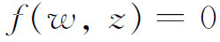
，其中z和w是复变量，在几何上相应于z的一个黎曼曲面与一个w平面或其一部分，或者也可以说是相应于这样的一个黎曼曲面，它上面每个点附有z和w的一对数值。若只考虑z和w的实部，方程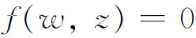
便表示实笛卡儿坐标平面的一条曲线。z与w仍可有满足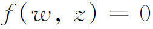
的复数值，但不能画图。实曲线具有复数点这一观点在射影几何的工作中已经熟知。平面曲线的双有理变换论对应于曲面的双有理变换论。在上述的新解释下，黎曼曲面的支点对应于曲线上那样的点，那里一条直线x＝常量与曲线相交于两个或多个相合的点，即它或者与曲线相切，或者过一个尖点。曲线上的二重点相当于曲面上那样的点，在那里两叶曲面恰好相切而无其他相接点。曲线上高阶重点也相当于黎曼曲面的其他奇点。在以后的叙述中将采用下面的定义（参看第23章第3节）：n次平面曲线的k＞1阶重点（奇点）P是这样一个点，通过P的普通直线与曲线相交于n－k个点。若在P点的k条切线是相异的，这个重点是寻常点。在计算一个n次曲线与m次曲线的交点数目时，每条曲线上重点的重数必须计算在内。若交点P在曲线
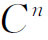
上是h重的，而在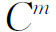
上是k重的，且在P点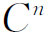
的切线与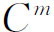
的切线不相同，则交点的重数是hk。一曲线C′称为伴随于曲线C，若C的重点都是寻常点或尖点，且若C的每个k阶重点是C′的一个k－1阶重点。克莱布什(30)是第一个用曲线术语来重新叙述第一类阿贝尔积分定理（第27章第7节）的人。阿贝尔考虑一个固定的有理函数R（x，y），其中x与y由任一代数曲线f（x，y）＝0关联着，使得y是x的函数。设（图39.2）f＝0为另一代数曲线
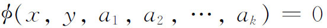
所截，其中
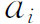
是φ＝0中的系数。设φ＝0与f＝0的交点是（x1，y1），（x2，y2），…，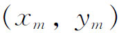
。（这些点的个数m是f与φ的次数的乘积。）已知f＝0上一点（x0，y0），其中y0属于f＝0的一个分支，则可考虑和式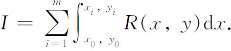
上限
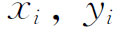
全都在φ＝0上，而积分I是上限的函数。于是，这些上限有一个特征数p，它应是其余上限的代数函数，数p只与f有关。再者，I能够表示成这p个积分与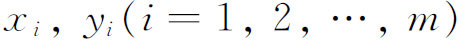
的有理函数与对数函数之和。又，若曲线φ＝0随参量由a1变到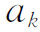
而改变，则xi也将变化，于是I通过xi成为ai的函数。ai的函数I将是ai的有理函数，或者在最坏的情况下也只包括ai的对数函数。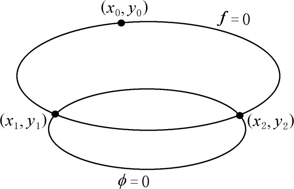
图39.2
克莱布什也把黎曼关于黎曼曲面上阿贝尔积分［即形如
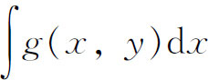
的积分，其中g是有理函数且f（x，y）＝0］的概念用到曲线上。为说明第一类积分，考虑一个无重点的四次平面曲线C4。这里p＝3且有三个处处有限的积分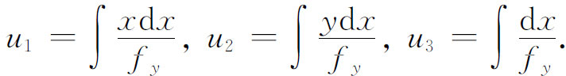
适用于C4的也可适用于n次任意代数曲线f（x，y）＝0。那时有p个积分代替三个处处有限的积分（其中p是f＝0的亏格），每个积分有2p个周期模数（第27章第8节）。积分具有形式
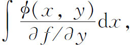
其中φ是一个（伴随的）多项式，恰为n－3次，且在f＝0的重点处与尖点处为零。
克莱布什的另一贡献(31)是引进亏格的思想作为对曲线进行分类的概念。若曲线有d个二重点，则亏格
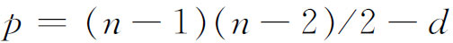
。以前有曲线的亏数概念（第23章第3节），即n次曲线可能有的二重点最多个数（n－1）（n－2）/2减去确实有的二重点数。克莱布什证明(32)：只具有寻常重点（切线全不相同）的曲线，亏格（genus）与亏数（deficiency）相等，且亏格在把平面变到自己的双有理变换下是一个不变量(33)。克莱布什亏格的概念是与黎曼对黎曼曲面的连通数相关联的。与亏格为p的曲线对应的黎曼曲面具有连通数2p＋1。亏格的概念可以用来建立曲线的重要定理。吕罗斯（Jacob Lüroth，1844—1910）证明了(34)亏格为0的曲线可用双有理变换变到一条直线。克莱布什证明了一条亏格为1的曲线可用双有理变换变到三次曲线。
除去用亏格分类曲线外，克莱布什还仿照黎曼的办法在每个亏格中引进类别。黎曼考虑过(35)他的曲面的双有理变换，例如，若
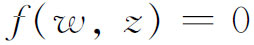
是曲面的方程，并设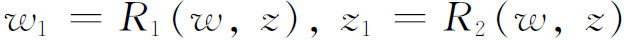
是有理函数，且逆变换是有理函数，则
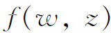
可以变换成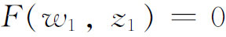
。两个代数方程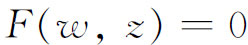
（或它们的曲面）仅当它们有相同的p值时才可以彼此双有理变换。（曲面的页数不一定保持不变。）黎曼不要求进一步的证明，它是由直观保证的。黎曼（在1857年的论文中）认为所有能彼此双有理变换的方程（或曲面）属于同一类。它们有相同的亏格p。然而，不同的类别可具有相同的p值（因为歧点可以不同）。亏格为p的最普遍的类，当p＞0时用3p－3个（复数）常数（方程中的系数）去刻画，当p＝1时用一个常数，当p＝0时用零个常数去刻画。在椭圆函数情况下，p＝1，于是有一个常量。对于三角函数，p＝0，故没有任何任意常量。黎曼把常量的个数叫做类模数。常量在双有理变换下是不变量。克莱布什同样把从一个曲线用一一对应的双有理变换导出的所有曲线放在一类。在同一类的曲线必然有相同的亏格，但是也可以有不同的类具有相同的亏格。